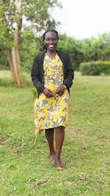

My name is Adhiambo Ruth. I am currently pursuing a short course in software deveopment and life skills. I am a dedicated and empathetic community psychologist, passionate about working with vulnerable groups especially adolescents and young people in the community. I provide a blended methodical and deep interpersonal warmth rooted in creating a stable, supportive environments where young people feel safe, seen, heard and empowered to navigate the complexities of identity, social pressures and mental well-being.
| School | Award |
|---|---|
| Makerere University | Bachelor |
| Nsamizi Training Insititute of Social Development | Diploma |
| Kololo high school | UACE |
©2026 Ruth Adhiambo All right reserved.